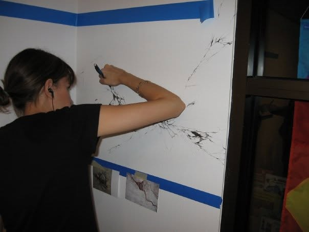

________ ________ ________ ___ ___ _________
|\ __ \|\ __ \|\ __ \|\ \|\ \|\___ ___\
\ \ \|\ \ \ \|\ /\ \ \|\ \ \ \\\ \|___ \ \_|
\ \ __ \ \ __ \ \ \\\ \ \ \\\ \ \ \ \
\ \ \ \ \ \ \|\ \ \ \\\ \ \ \\\ \ \ \ \
\ \__\ \__\ \_______\ \_______\ \_______\ \ \__\
\|__|\|__|\|_______|\|_______|\|_______| \|__|
├─ about
Hi, I’m Melissa! I’m a Florida native who began painting at the age of seven, started experimenting with HTML and CSS around the age of 12, and learned Photoshop and digital painting around the age of 15. I always loved art and science, but I was never really sure what I wanted to do as a profession.

Me at Graphiti: A Live ephemeral graffiti piece, FIU, 2009
I took a couple of programming classes during my undergrad at FIU, but I was mainly drawing, making installation art, and working toward my art history thesis (I wanted to be a museum curator). I was fortunate enough to study abroad in Italy and exhibit my work in local Florida galleries and international exhibitions.
After graduating and getting a job in an unrelated field, I paused my art journey. While I helped family and friends with their websites and graphic design projects on the side, I was learning to use CSS to make art and other “pointless” things. During COVID, I took a web developer course along with CS50. I also participated in CodePen’s weekly challenges and managed to have the featured pen for #CodePenChallenge: Book Text!
Nowadays, I’m trying to make more things than I consume and live a minimalist lifestyle. I stay away from social media and try to browse content on the small web instead. I’ve also been catching up on classic sci-fi books and learning new recipes to make healthy, home-cooked meals.
I currently live in NC with my husband and daughter, helping a little human find her place in the world.